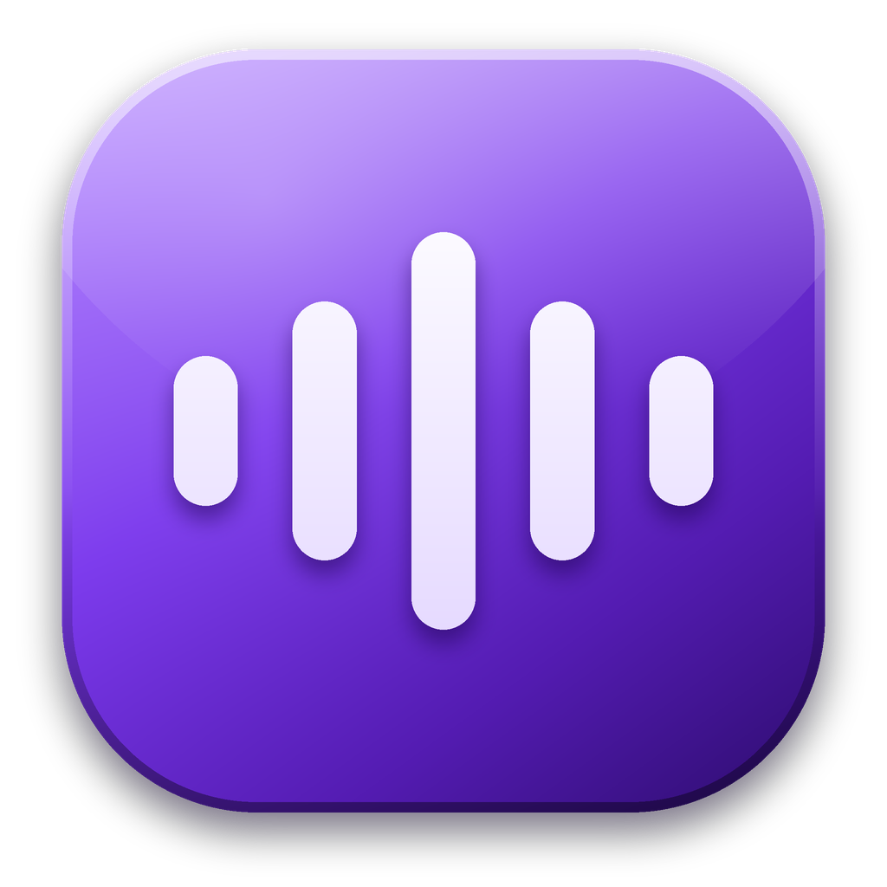
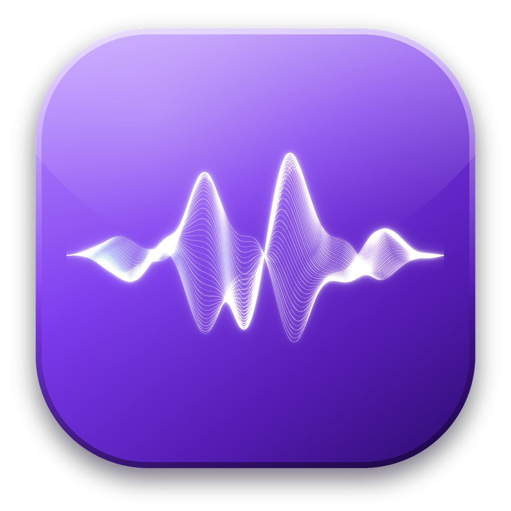
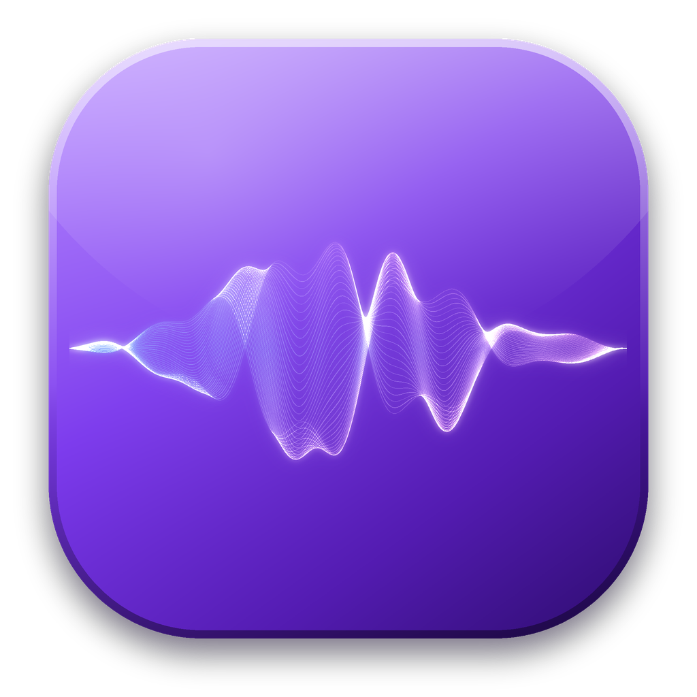

A · barras (actual)
B · onda luminosa
C · onda suave, tono azul-lilaCómo lo leo: la onda luminosa (B) se ve como una pieza de marca en grande. A 32 y 16 px las líneas finas se funden en una mancha: para la bandeja de Windows conviene seguir usando las barras (A), que quedan nítidas.